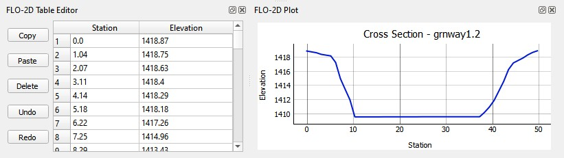
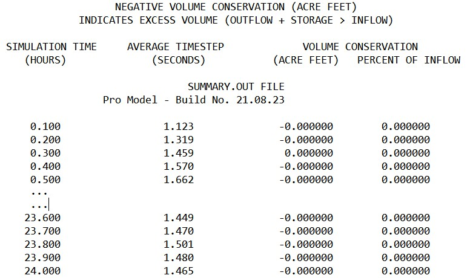
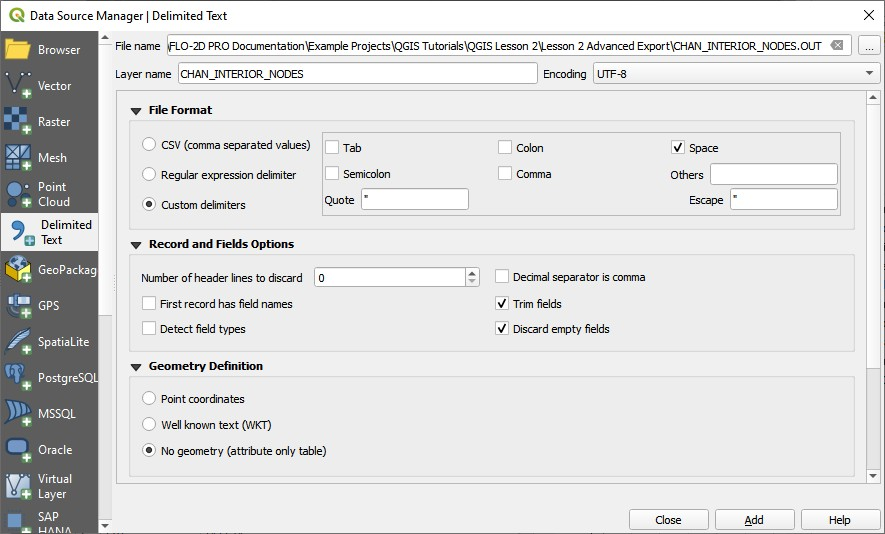
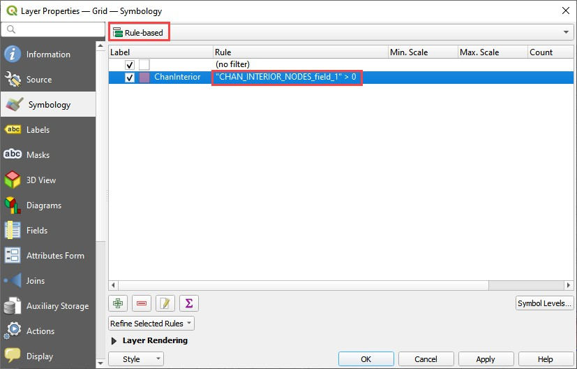
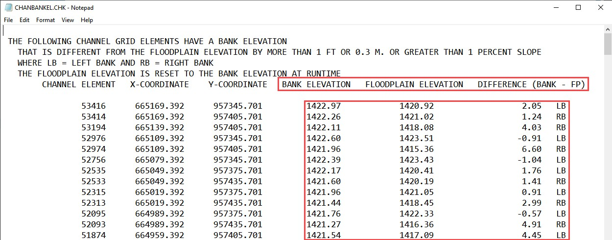
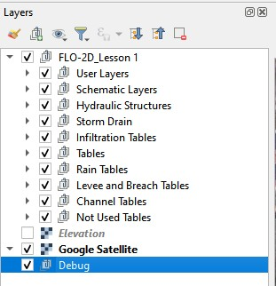
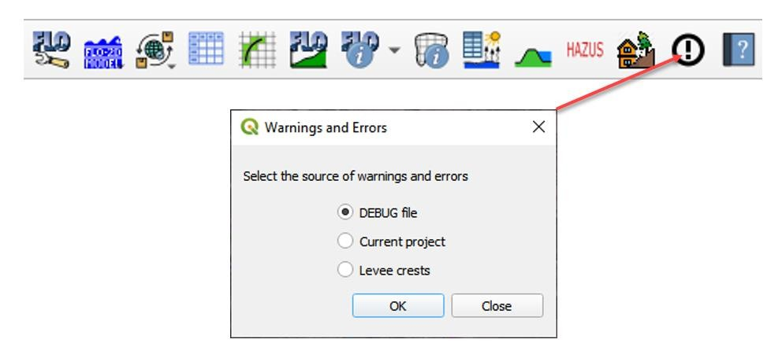
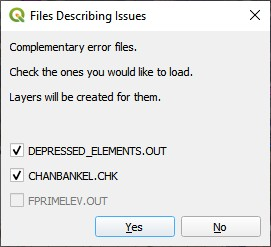
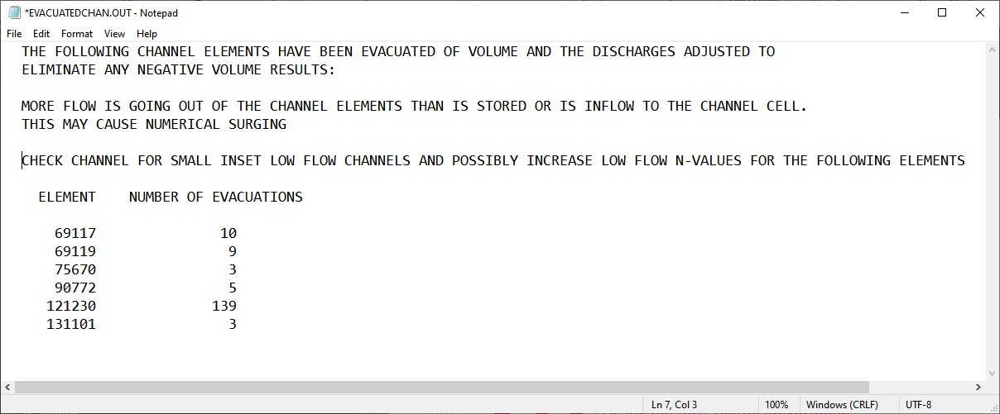

3. CHAPTER 3 - CHANNEL REVIEW AND TROUBLESHOOTING
3.1. Channel Review and Troubleshooting
This section of the manual discusses how to review and troubleshoot channel data and results using the Reviewer’s Checklist. It covers issues such as boundary conditions, check files, volume conservation, instability, and data errors. The Reviewer’s checklist is an Excel workbook that lists every *.dat and *.out file required for a FLO-2D Project review. This section will focus on the Channels tab as shown in Figure 73.

Figure 73. Reviewer’s checklist.
3.1.1. 13.1 Documentation
Documenting the 1D channel process will help reviewers understand why specific conditions are applied. If returning to an old project, good documentation helps future reviewers to understand the complete system.
3.1.2. 13.2 Boundary Conditions
Are the boundary nodes defined correctly? Channel boundaries need to be assigned with a single boundary point. Return to the inflow section for more details regarding channel inflow boundary.
Figure 74 and Figure 75 show examples of the upstream and downstream boundary points and nodes. The points are user data, and the nodes are Schematized data.

Figure 74. Upstream Channel Boundary with an Inflow Node.

Figure 75. Downstream Channel Boundary with an Outflow Node.
3.1.3. 13.3 Cross Sections
Check the cross section placement. Note any locations where more cross sections are required such as the top half of Figure 76. The bottom half shows a channel with good cross section placement to represent the transition from an urban channel to a natural channel.

Figure 76. Cross Sections wih a Bad Transition and a Good Transition.
Check each cross section plot for accuracy using the cross section geometry table and plot as shown in Figure 77.
Figure 77. Review a Cross Section Shape.
3.1.4. 13.4 Profiles
Click the Profile button and then click the left bank channel line with the FLO-2D plugin to scan each channel profile. Figure 78 shows how to check the profile.

Figure 78. Check Chanel Profile.
Check for unreasonable breaks in slope or bank elevations. Figure 79 shows some channel profiles.

Figure 79. Channel Profile Examples.
3.1.5. 13.5 Transitions
Review the change in cross section area, width, and wetted perimeter for each cross section. Check for changes in these values that indicate the channel is transitioning too quickly for the model to remain numerically stable. Find this in the XSECAREA.OUT file (Figure 80) or by using the Profiles.exe program.

Figure 80. XSECAREA.OUT Example.
3.1.6. 13.6 Alignment
Review the channel alignment (Figure 81). Check for left or right bank cells that are more than one grid element width off. Make sure the banks are inside levees. Make sure the banks do not share with any components that have a high conflict rating. The advanced channel lesson has a good section on how to align channels to the banks correctly.

Figure 81. Channel with Good Alignment.
3.1.7. 13.11 Volume Conservation
Check summary.out (Figure 82) and chvolume.out (Figure 83) for volume errors. Volume Conservation (VC) errors exist if the Percent of Inflow column is higher than 0.001 percent.
If VC errors occur, review the Channel Optimization training videos and the Channel Guidelines document.
Figure 82. Summary.out Example.
If summary.out has a volume error but chvolume.out does not, the error is on the floodplain and not attributed to the channel data.

Figure 83. CHVolume.out Example.
3.1.8. 13.13 Velocities
Check the maximum velocities sorted by high to low in the veltimec.out (Figure 84). If the velocities are unreasonable, look for simple problems.
Steep slope o Drop structure or a naturally occurring steep channel slope can result in naturally high velocities. o Bad cross section data resulting in bad bedslope can result in unnaturally high velocities. o Test data against an Open Channel Flow Calculator.
Numerical instability.
If the time of occurrence is not near the peak, this could indicate instability. o If the grid element listed is close to an inflow node, the velocity could be unnaturally high. Fix this by ramping the inflow over 0.5 hours. If water is added to a cross section too quickly, it can become unstable.
If the grid element is close to a storm drain outfall or culvert, review the transition to make sure it matches the physical system. Increase the roughness around connected component. Lower the Channel Courant to 0.4, 0.3, or 0.2.
If applied corrections do not help, consider the grid element size. o Review the Channel Optimization video and Channel Guidelines for more ideas.

Figure 84. Veltimec.out Example.
3.1.9. 13.14. Timestep
Check for changes to the timestep that exceed one thousand corrections or an order of magnitude higher than the other channel elements that are listed in Time.out (Figure 85). This channel is not responsible for timestep decrements.
Note
Observation by K O’Brien. If channel elements are listed in TIME.OUT,correcting the cross section might push the issue downstream.Channels have a high impact on the timestep decrement if they are steep or if the grid element size is small. If an unreasonable number of timestep decrements result because of a channel node, it may not be fixable. This is OK so long as the channel is stable and volume conservation is observed.

Figure 85. Time.out Example.
3.1.10. 13.15. Interior Nodes
Interior channel nodes are nodes that are removed from the project domain. They cannot transfer flow. Do not assign anything to these nodes. This short segment shows how to load these nodes into QGIS for an inspection. The main purpose of this illustration is to show users how to perform a table join. Table joins are a very helpful tool for many different types of data analysis.
Load the file CHAN_INTERIOR_NODES.OUT (Figure 86) as a delimited text file into QGIS (Figure 87).

Figure 86. Chan_Interior_Nodes.out Example.
Figure 87. Load Delimited Text.
Join the new data to the Grid layer (Figure 88).

Figure 88. Join Delimited Text to Grid.
Add a symbology rule to the Grid layer (Figure 89).
Figure 89. Rule-based Grid Symbology.
Review the interior grid elements (Figure 90).

Figure 90. Interior Channel Nodes Example.
3.1.11. 13.16. Check files
ChanBankEl.chk (Figure 91) lists the differences between the channel cross section and the left or right bank grid elevation. If major elevation differences are listed, please review them, and see if corrections are required.
Figure 91. ChanBankEl.chk Example.
Note
The raw file is not easy to review. It is better to open the file with the Debug tool.
Create a new group called Debug (Figure 92). Select the Group and run the debug tool.
Figure 92. Create Debug Group.
Click the Load Debug tool (Figure 93) and click OK to load the debug data.
Figure 93. Import Debug Data Tool.
Data location: QGIS Tutorials/QGIS Lesson 2/Lesson 2/Advanced Debug Run (Figure 94).

Figure 94. Example Debug Output Files.
Click Yes to load both extra error check files (Figure 95).
Figure 95. Additional Debug Files Loaded.
Double click the Channel Bank Elevation Differences layer and set the symbology properties (Figure 96).

Figure 96. Style Channel Bank Elevation Difference.
Review the map for problems that should be fixed.
Grouped positive points mean the channel is embedded below the floodplain. Check cross sections.
Grouped negative points mean a channel is perched above the floodplain. Floodplain to channel flow exchange is blocked. Check cross section data.
All the points in the following image are OK because they will be automatically corrected when flopro.exe runs (Figure 97).

Figure 97. Channel Bank Difference Example.
channel.chk This file is usually empty. It contains messages related to channel extensions though other channel bank elements or levees or when the channel needs to be wider.
3.1.12. 13.17 Convergence
The convergence for the channel is reported in Channel_Convergence.out (Figure 98). When this file is written, some channel elements are not converging. This description will discuss ways to correct this issue.
Note
The following file example is from another project. The AdvancedChannel training module did not write the file because no convergence issues existed.Let’s pretend that the grid element listed is 35368. This is one from the training module so it can be inspected.
Figure 98. Channel_Convergence.out Example.
Type 35368 into the FLO-2D grid info box (Figure 99) and click the eye button.

Figure 99. Grid Info Tool.
Assume that this channel element and cross section are not able to converge for depths greater than
1ft. This means that the calculated velocity is invalid, and the solution velocity is estimated from the diffusive wave equation. It is not typical to see problematic channel elements in clear water studies. If they are present, use the same techniques discussed in Channel Optimization video and the Channel Guidelines.
Corrective measures include:
Increasing the roughness around inflow nodes, structures, and outfalls.
Using shallow n adjustments.
Improving transitional cross sections with better interpolations.
Fixing bedslope problems.
Correct tributary/split transitional areas to match the physical system.
Applying correct tailwater conditions around hydraulic structures where backwater or reverse flow occurs.
Applying channel termination areas correctly.
3.1.13. 13.18 Super Critical
The super critical output file (Figure 100) will print the time and number of timesteps that a specific node or cross section is super critical. The file only exists if a super critical flow is reported.
Note
The following image is from another project.

Figure 100. Super.out Example.
It is OK to have super critical channel cross sections. If the file reported grid elements that should not be super critical, check the following:
Check overly steep bedslope between cross sections.
Increasing the roughness.
Using shallow n adjustments.
Improving transitional cross sections with better interpolations.
3.1.14. 13.19 Overbank flow
If there is no overbank flow, OVERBANK.OUT will be empty or it will not exist. If the Overbank file does exist, it will report the volume that is transferred out of the channel for the bank elements.
3.1.15. 13.20 Stability
If there is no channel instability, CHANSTABILITY.OUT will be empty or it will not exist. It isn’t a commonly reported file for clear water simulations. It may be written for sediment transport or mudflow in channels.
3.1.16. 13.21 Evacuated
Note
The following evacuatedchan.out file is from a different project.
EVACUATEDCHAN.OUT file (Figure 101) is written when all the water is taken from a cross section in a single timestep. A V-shaped channel might result in evacuated timesteps. JS O’Brien has modified the channel flow so they do not share flow until 0.1ft or 0.03m of depth. This has eliminated most evacuated channel reporting.
Figure 101. EvacuatedChan.out Example.
3.1.17. 13.22 Drain Time
Check to see if the channel finished draining the project (Figure 102). If there is no tidal or baseline flow, the hydrograph at the end of the channel should be close to zero or the channel depth should be close to zero. There are many ways to check this. Here are two easy ones.
HYDROG.EXE shows that the hydrograph at the end of the channel should be about finished. This one still has some residual rainfall.

Figure 102. Channel Hydrograph Hydrog Example.
PROFILES.EXE show that the flow channel is almost empty (Figure 103).

Figure 103. Channel Profile Example.
3.1.18. 13.23 XSECAREA
This is about the same as the Transitions above. It specifically asks the user to check this data for bad cross sections.
Review the change in cross section area, width, and wetted perimeter for each cross section (Figure
104). Check for changes in these values that indicate the channel is transitioning too quickly for the model to remain numerically stable. Find this in the XSECAREA.OUT file or by using the Profiles.exe program.
Figure 104. XsecArea.out Example.
3.1.19. 13.24 CHANMAX
CHANMAX.OUT (Figure 105) is a useful file that lists the maximum discharge, maximum water surface elevation, and respective times for each of those. Review this file for anomalies. Instability and volume conservation error can sometimes be traced back to cross sections with discharge values that are too high or discharge values that do not align with the water surface elevation and the time.

Figure 105. ChanMax.out Example.
3.2. References
Chow, V.T., 1959. Open-Channel Hydraulics, McGraw-Hill Book Company, NY.
Grant, G.E., 1997. “Critical flow constraints flow hydraulics in mobile-bed streams: A new hypothesis,” Water Resources Research, Vol.33, No.2, 349-358.
Jia, Y., 1990. “Minimum Froude Number and the Equilibrium of Alluvial Sand Rivers,” Earth Surface Processes and Landforms, John Wiley & Sons, London, Vol. 15, 199-200.
Julien, P.Y., 1995. Erosion and Sedimentation, Cambridge University Press, NY.
Simons, D.B. and F. Senturk, 1976. Sediment Transport Technology, Water Resources Publications, Ft. Collins, CO.
U.S. Department of Transportation, Federal Highway Administration, 2005. “Hydraulic Design of Highway Culverts,” Pub. No. FHWA-NHI-01-020, National Technical Information Service, Springfield, VA.
91 References